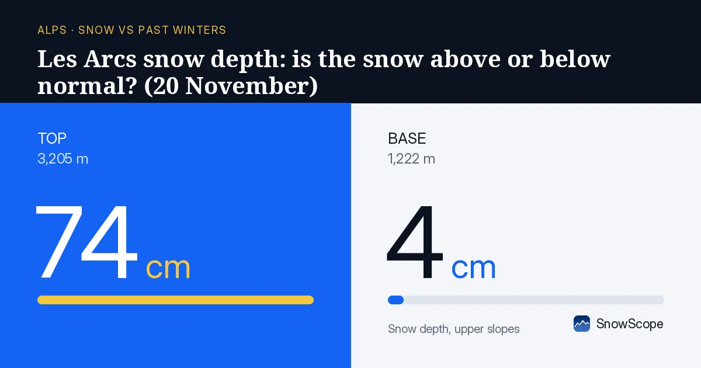

Les Arcs snow depth: is the snow above or below normal? (20 November)
Les Arcs snow depth – 5 resorts in the Alps, 46 past winters, one date: here is how today compares. Clearly above normal: 0. Confidence: good for the trend, lower for any single number.
See the live snow forecast for Les Arcs in the SnowScope appSnow depth, powder alerts and the 3D map, free.
Today's snow map
Top of this list: Les Arcs, about 166 cm up high. Then Orelle 145 cm and La Plagne 144 cm.
Snow-covered ground in the Alps: 77,180 km². Resorts with snow: 874 of 1,204.
Station values: measured, one point. Read them together.
| Resort | Snow depth | New snow, 72 h | Coming, next days | Top |
|---|---|---|---|---|
| Les Arcs | 166 cm | 134 cm | 77 cm | 3,205 m |
| Orelle | 145 cm | 143 cm | 92 cm | 3,221 m |
| La Plagne | 144 cm | 125 cm | 77 cm | 3,058 m |
| La Grave | 133 cm | 122 cm | 108 cm | 3,543 m |
| La Rosière | 131 cm | 130 cm | 72 cm | 2,799 m |

Against past winters
At about 2,213 m, Les Arcs has 44 cm today; a normal 20 November has 32 cm there.
That is more than in 28 of the 46 past winters on this date.
An early lead like this matters most for the lower and middle runs, which usually wait until December for this much snow.
Day by day at Les Arcs: Friday 20 November 53 cm; Saturday 21 November 8 cm; Sunday 22 November 52 cm; Monday 23 November 17 cm.
Height by height at Les Arcs: 1,222 m 4 cm on the ground, 4 cm more in the next 7 days; 2,213 m 38 cm on the ground, 46 cm more in the next 7 days; 3,205 m 74 cm on the ground, 48 cm more in the next 7 days.
Is this normal?
Near average at Les Arcs: 44 cm at 2,213 m, deeper than in 28 of the past 46 winters on this date (usual: 32 cm).
Orelle, 2,779 m: 49 cm, close to normal (usual: 64 cm); deeper than in 17 of the past 46 winters.
Near average at La Plagne: 36 cm at 2,137 m, deeper than in 22 of the past 46 winters on this date (usual: 38 cm).
Below par at La Grave: 39 cm at 3,369 m against a usual 80 cm, and only 10 of the past 46 winters had less on 20 November.
La Rosière, 1,995 m: 36 cm, close to normal (usual: 28 cm); deeper than in 27 of the past 46 winters.
The forecast in short
Forecast to 23 November: 108 cm at La Grave, 92 cm at Orelle and 77 cm at Les Arcs. Treat the later days with care.
Forecasts a few days ahead can change: look at the map again the day before you travel.
Tips for skiers
- South-facing slopes take the most sun and melt first; high, north-facing slopes keep their snow the longest.
- Snow on the map does not mean a resort is open: check lifts and opening dates on the resort's website.
- Early-season snow is thin. Stay on open, groomed pistes: rocks and grass can hide just under the surface.
- Get a powder alert in the SnowScope app to know when Les Arcs gets fresh snow.
About these numbers
Resort snow depths are the deepest snow on the resort's upper slopes on the date shown; they are estimates for an area, not a measurement at one point. Forecasts can change. Always read the official avalanche bulletin before going off-piste.
Official avalanche bulletins: EAWS (Alps)
Cite this report
For research, teaching or the press: the numbers and charts are free to reuse under CC BY 4.0 with this citation.
SnowScope (2026), Les Arcs snow depth: is the snow above or below normal? (20 November), https://snowscope.app/blog/en/2026/11/alps-snow-vs-past-winters-20-november-2026.html, accessed 2026-11-20
SnowScope (Atlas Labs). (2026, November 20). Les Arcs snow depth: is the snow above or below normal? (20 November). SnowScope snow reports. https://snowscope.app/blog/en/2026/11/alps-snow-vs-past-winters-20-november-2026.html
BibTeX
@misc{snowscope2026alpssnowvspastwinters20n,
author = {{SnowScope (Atlas Labs)}},
title = {Les Arcs snow depth: is the snow above or below normal? (20 November)},
year = {2026},
month = nov,
howpublished = {\url{https://snowscope.app/blog/en/2026/11/alps-snow-vs-past-winters-20-november-2026.html}},
note = {Published 2026-11-21 11:18 UTC; accessed 2026-11-20}
}· CC BY 4.0 · Methods, data and tools →
Les Arcs: snow and temperature by height, this winter vs last (tools) →
Follow Les Arcs
Free: a message when fresh snow is coming, and the forecast every morning.
More snow reports

Les Arcs forecast for 23–29 November: 29 cm at the top, 26 cm mid-mountain, 12 cm at the base. Data from 16 November.

La Plagne's upper slopes forecast 28 cm of fresh snow next week (23–29 Nov), building on 99 cm from earlier. Data from 16 November 2026.

Les Arcs leads with 166 cm on upper slopes. Snow falls through Sunday. Best runs are high and north-facing. Data from 20 November.